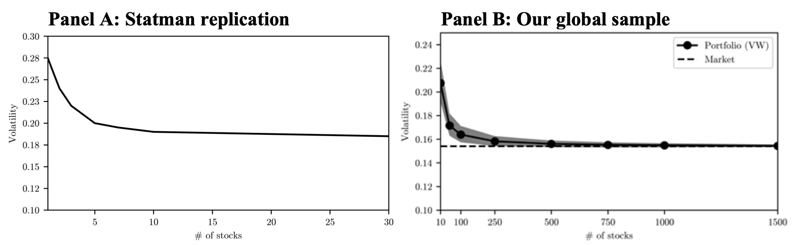

Research
Here you will find my current research.
Working Papers

Common perception is that you need 25 stocks for full diversification, we show you need 250! Sharpe ratios increase by 33%.
7. FOMO in Equity Markets? Concentration Risk in (Sustainable) Investing
(with Joren Koëter and Mathijs van Dijk). [SSRN]
Press:
Cover story in IPE Magazine 2025 Nov/Dec Edition (Equities that bear fruit),
Article on paper in Financialinvestigator.nl by CFA Society Netherlands (in English),
Article on paper in Financialinvestigator.dk by Blackrock (in English),
Article on paper in Top1000funds.com (in English),
Article on paper in De Tijd (in Dutch),
Article on paper in Pensioen Pro (In Dutch),
Article on pension fund decreasing concentrated portfolio after our paper release in ipe.com (in English),
Original article from dutch website Pensioen Pro (In Dutch),
Pension fund wrote reply to our paper on low number of stocks in their portfolio on their website (In Dutch),
Blog post references our paper prof-soehnholz.com (In English)
Abstract
This paper revisits the financial consequences of imperfectly diversified portfolios – in light of the trend towards concentrated (sustainable) portfolios among some institutional investors. Based on a large global sample of stocks over 1985-2023, we find that – in contrast to common beliefs and prior studies – it takes considerably more than 30-40 stocks to fully diversify idiosyncratic risk. Our second key finding is that concentrated portfolios involve a hitherto unstudied risk: FOMO (Fear Of Missing Out) – just 2% of stocks account for all stock market wealth creation and smaller portfolios have a greater probability of missing out on these top-performing stocks. We find similar diversification and FOMO effects for portfolios constructed based on ESG screens, exclusion of sin industries, and portfolio weight optimization.
Presented at: Rotterdam School of Management, University of St Andrews Business School, 2025 Annual Netspar Conference (Attended by Queen Máxima of the Netherlands), International Pension Workshop 2025, Netspar after-lunch seminar, CFA Netherlands, ICPM webinar, and IPE Annual Conference and Awards.
Podcast: Netspar Podcast on Pensions and Research, Wat zijn de financiële consequenties van geconcentreerde beleggingsportefeuilles? (In Dutch).

Real Impact is made simple and measurable by an Emission Future's negative dollar return.
6. The Future of Emissions
(with Jules van Binsbergen). [SSRN]
Invited for presentation at the American Finance Association Annual Meeting (AFA), European Finance Association Annual Meeting (EFA), SFS Cavalcade North America, in the global Financial Economics of Climate and Sustainability (FECS) doctoral course hosted by Harvard, Vrije Amsterdam University, Utrecht University, Cambridge University, ABN AMRO, Erasmus University, and Stockholm School of Economics.
AbstractPress: Wharton Climate Center; Jyllands Posten, Print and Online; Finans.
Podcast: Rig på viden, Episode 111 (In Danish).

Investors with flexible mandates have outperformed in their ESG investments since the onset of the financial crisis. Figure shows cumulative excess returns within the top quantile of flexible ownership of stocks with different ESG levels.
5. Skills and Sentiment in Sustainable Investing
(with Alexander Kronies). [SSRN]
Presented at the fourth University of Oklahoma Energy and Climate Finance Research Conference co-sponsored by the Review of Financial Studies (RFS).
Awarded: Best Paper in Finance at the 2020 Conference on Behavioral Research in Finance, Governance, and Accounting (BFGA).
AbstractWe document a significant difference in the returns to sustainable investing across investor types. Investors with strict ESG mandates earn 3.1% less than flexible investors. The mechanism is that flexible investors are able to react on expected ESG improvements. Without engaging in activism, flexible investors buy stocks that subsequently experience ESG score increases. After ESG improvements have realized, demand from strict mandate investors pushes up stock prices, resulting in positive returns for flexible investors. A new climate sentiment measure shows that the performance gap is higher when accompanied by rising sentiment, as seen during the 2010s. Our channel accounts for 51% of the return difference between strict and flexible ESG investment mandates. Hence, going from backward to forward-looking ESG ratings could reduce both capital misallocation and wealth transfer from strict investors, such as pension funds, to more flexible investors, such as hedge funds.
Podcasts: Rig på viden, Episode 13 (In Danish); Rig på viden, Episode 79 (In Danish).
Press: CAIA Association.
Presented at: 1st YSBC Sustainable Finance Conference, HEC Paris 6th Phd Workshop, CFA Meeting on ESG-Ratings and Sustainable Investing, University of Oklahoma Energy and Climate Finance Research Conference 2022, American Finance Association Annual Meeting Poster Session (AFA 2022), University of Luxembourg Seminar 2021, The Central Bank Research Association Annual Meeting (CEBRA 2021), Nordic Finance Network Young Scholars Finance Workshop (NFN 2020), 2nd Conference on Behavioral Research in Finance, Governance and Accounting (BFGA 2020), PhD Symposium of the 32nd Northern Finance Association Conference (NFA 2020), 19th Conference on Credit Risk Evaluation (CREDIT 2020), Becker Friedman Institute Macro-Finance Research Program Summer Session for Young Scholars (MFR 2020), Wharton PhD Brown Bag Series 2020.
Two scholars at Copenhagen Business School created a “text-based sustainability sentiment measure,” that explores concerns with climate change among investors. https://t.co/mYjhcFFIRK pic.twitter.com/XnZTg6rTnW
— Portfolio for the Future | CAIA Association Blog (@CAIA_Blog) June 11, 2020
Work in Progress

Greener funds (g) have higher value added (V) even though their alphas are lower.
4. The Market for Green Funds
(with Michael Halling and François Koulischer).
AbstractDiscussions
Climate Linked Bonds
(Broeders ECB and Maastricht University, Dmitrov DNB and University of Amsterdam, and Verhoeven DNB) [Paper].
Presented at: International Pension Workshop (2025).
Altruism or self-interest? ESG and participation in Employee Share Plans
(Bonelli HEC Paris, Briere Paris-Dauphine, and Derrien HEC Paris) [Paper, Slides].
Presented at: Conference in Sustainable and Socially Responsible Finance (2022).
From stress testing to systemic stress testing: The importance of macroprudential regulation
(Vodenska Boston University, Aoyama Kyoto University, Becker Boston University, et al.) [Published paper].
Presented at: FMA Europe (2018).
Resting Working Papers
3. Corporate Asset Pricing
(sole author). [Paper]
Presented at: American Economic Association Annual Meeting Poster Session (AEA 2022), 36th Congress of the European Economic Association and the Econometric Society European Meeting (EEA-ESEM 2021), Econometric Society Asian Meeting (2021), Nordic Finance Network PhD Workshop (NFN 2021), Copenhagen Business School Brown Bag PhD seminar (2021).
2. Macroprudential Buffers: Trading Systemic Risk for Risk Premia
(sole author). [Paper]

When countries increase their macroprudential buffer it increases the price of risk in their respective economies.
Presented at: Wharton School at the University of Pennsylvania, PhD Nordic Finance Workshop, Poster Session at American Finance Association Annual Meeting (AFA), Copenhagen Business School.
1.
Identification and Assessment of Systemic Risks in Financial
Networks: Modelling Fire Sales from Regulatory Cliff Effects
(with Graeme Cokayne), Danmarks Nationalbank Working Paper, Number 117. [Paper]

Systems of financial institutions may go from firm to fragile fast. Log scale plot of system equity lost from a small shock for different price impacts. The dashed vertical line indicates the limit of fire sales calculated in the paper. The full line indicates the baseline value.
Presented at: Financial Management Association (FMA) Europe (University of Agder), RiskLab (Bank of Finland), Bank of England, Copenhagen Business School, Lund University, Nykredit A/S, Danmarks Nationalbank.
Press: Finans,
FinansWatch,
Danmarks Radio,
Danmarks Nationalbank.
This paper investigates fire sales triggered by regulatory cliff effects induced by the loss of Capital Requirements Regulation (CRR) compliance on covered bonds. The loss of CRR
compliant status leads to banks holding these covered bonds to lose several regulatory advantages, one consequence being a lower solvency. In our analysis, following the loss of CRR
compliance, banks sell off their covered bonds in a fire sale, in an attempt to return to their initial solvency, resulting in losses of equity for the system as a whole. Further, we find that, for price impacts larger than a critical threshold, even small shocks lead to explosive fire sales and large losses of equity. While these losses can be averted if the
banks allow their solvency levels to fall temporarily, other regulations, such as those relating to large exposures to other banks, could still trigger similar fire sales.